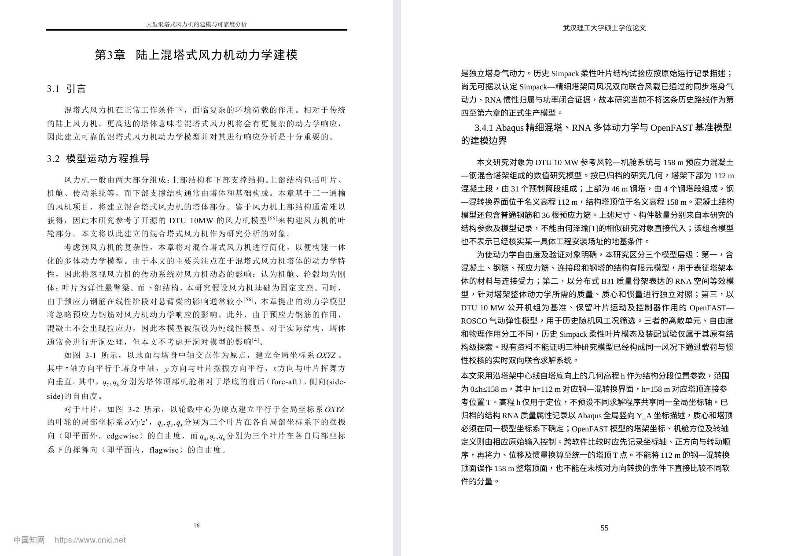
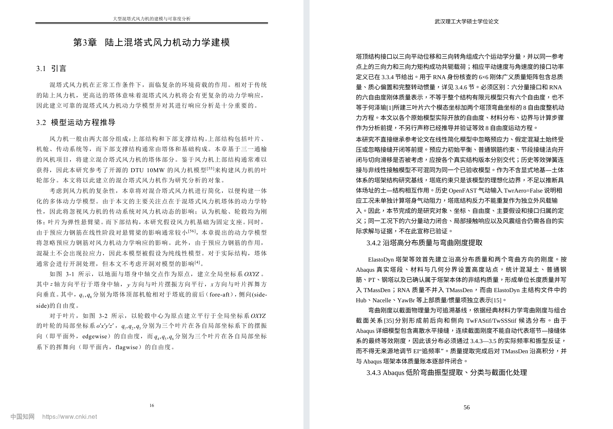

正式修订的两页原始拼图（V8-R7）
左：何泽瑜原论文PDF第27页（正文第16页）；右：我们V8-R7论文PDF第55页和第56页。均是实际Word转PDF页面，不是重绘假图。两张图片合起来覆盖本次五段正式正文。


左：何泽瑜原论文第27页
直接加载原始PDF，保持原句、图和原始标点。下方为研究内容逐段解读，不是照搬原论文到我方正文。
逐段核对
右：我们的原生Word正式修订正文
改写位置：第三章3.4.1（研究对象、三模型分工、几何/坐标、六分量、预应力/接触假设）。这是本项目原始模型资料的原创综合整理，不是何的8DOF方程复制。
我们修订后的正式正文 · 段1
本文研究对象为DTU 10 MW参考风轮—机舱系统与158 m预应力混凝土—钢混合塔架组成的数值研究模型。按已归档的研究几何，塔架下部为112 m混凝土段，由31个预制筒段组成；上部为46 m钢塔，由4个钢塔段组成，钢—混转换界面位于名义高程112 m，结构塔顶位于名义高程158 m。混凝土结构模型还包含普通钢筋和36根预应力筋。上述尺寸、构件数量分别来自本研究的结构参数及模型记录，不能由何泽瑜[1]的相似研究对象直接代入；该组合模型也不表示已经核实某一具体工程安装场址的地基条件。
GitHub V8-R7 原V7定位ID b0367 · 原生Word重建输入我们修订后的正式正文 · 段2
为使动力学自由度及验证对象明确，本研究区分三个模型层级：第一，含混凝土、钢筋、预应力筋、连接段和钢塔的结构有限元模型，用于表征塔架本体的材料与连接受力；第二，以分布式B31质量骨架表达的RNA空间等效模型，针对塔架整体动力学所需的质量、质心和惯量进行独立对照；第三，以DTU 10 MW公开机组为基准、保留叶片运动及控制器作用的OpenFAST—ROSCO气动弹性模型，用于历史随机风工况筛选。三者的离散单元、自由度和物理作用分工不同，历史Simpack柔性叶片模态及装配试验仅属于其原有结构级探索。现有资料不能证明三种研究模型已经构成同一风况下通过载荷与惯性校核的实时双向联合求解系统。
GitHub V8-R7 原V7定位ID b0368 · 原生Word重建输入我们修订后的正式正文 · 段3
本文采用沿塔架中心线自塔底向上的几何高程h作为结构分段位置参数，范围为0≤h≤158 m，其中h=112 m对应钢—混转换界面，h=158 m对应塔顶连接参考位置T。高程h仅用于定位，不预设不同求解程序共享同一全局坐标轴。已归档的结构RNA质量属性记录以Abaqus全局竖向Y_A坐标描述，质心和塔顶必须在同一模型坐标系下确定；OpenFAST模型的塔架坐标、机舱方位及转轴定义则由相应原始输入控制。跨软件比较时应先记录坐标轴、正方向与转动顺序，再将力、位移及惯量换算至统一的塔顶T点。不能将112 m的钢—混转换顶面误作158 m整塔顶面，也不能在未核对方向转换的条件下直接比较不同软件的分量。
GitHub V8-R7 原V7定位ID b0369 · 原生Word重建输入我们修订后的正式正文 · 段4
塔顶结构接口以三向平动位移和三向转角组成六个运动学分量，并以同一参考点上的三向力和三向力矩构成功共轭载荷；相应平动速度与角速度的接口功率定义已在3.3.4节给出。用于RNA身份核查的6×6刚体广义质量矩阵包含总质量、质心偏置和完整转动惯量，详见3.4.6节。必须区别：六分量接口和RNA的六自由度刚体质量表示，不等于整个结构有限元模型只有六个自由度，也不等于何泽瑜[1]所建三叶片六个模态坐标加两个塔顶弯曲坐标的8自由度整机动力方程。本文以各个原始模型实际开放的自由度、材料分布、边界与计算步骤作为分析前提，不另行声称已经推导并验证等效8自由度运动方程。
GitHub V8-R7 原V7定位ID b0370 · 原生Word重建输入我们修订后的正式正文 · 段5
本研究不直接继承参考论文在线性简化模型中忽略预应力、假定混凝土始终受压或忽略接缝开闭等前提。预应力初始平衡、普通钢筋约束、节段接缝法向开闭与切向滑移是否被考虑，应按各个真实结构版本分别交代；历史等效弹簧连接与非线性接触模型不可混同为同一个已验收模型。作为不含显式地基—土体体系的塔架结构研究基线，塔底约束只是该模型的理想化边界，不足以推断具体场址的土—结构相互作用。历史OpenFAST气动输入TwrAero=False说明相应工况未单独计算塔身气动阻力，塔底结构反力不能重复作为独立外风载输入。因此，本节完成的是研究对象、坐标、自由度、主要假设和接口归属的定义；同一工况下的六分量动力闭合、局部接触响应以及风震组合仍需各自的实际求解与证据，不在此宣称已验证。
GitHub V8-R7 原V7定位ID b0371 · 原生Word重建输入